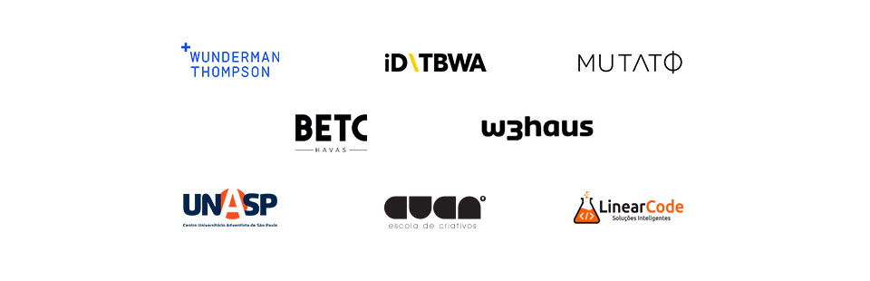

SOBRE O PROJETO
PerifaLions é um projeto independente, sem fins lucrativos, que nasceu para dar visibilidade e oportunidade a estudantes universitários dos cursos de Publicidade da periferia de São Paulo.
Só na periferia de São Paulo existe mais de 20 faculdades de publicidade. Uma média de 3 mil alunos distantes do mercado, não apenas no mapa. Quantos talentos a publicidade está perdendo? Chegou a hora desses talentos serem vistos e reconhecidos.
O PeifaLions é uma premiação dedicada a esses estudantes, para destacar, reconhecer e premiar jovens talentos, e que vai conectá-los diretamente com grandes profissionais e grandes agências do mercado. Os participantes se inscrevem em dupla e deverão desenvolver uma campanha publicitária a partir de um briefing, sendo mentorados por esses profissionais. Uma chance de aprender, executar e colocar em prática todos os ensinamentos passados por seus mentores.
Ao final, as campanhas serão julgadas por um júri de peso. A dupla vencedora vai participar do Festival Internacional de Cannes 2020, e volta com uma vaga de estágio garantida em uma grande agência de São Paulo. Além disso, receberão um intensivão de inglês até a viagem, terão todo suporte burocrático para documentação e todo o apoio para aproveitarem a experiência ao máximo.
A premiação contempla também o 2º e 3º lugar, com vagas de estágio e bolsas de estudo.
Premiação | Duplas Vencedoras
-
1º LUGAR
- – Intensivão de inglês
- – Participação no Festival de Cannes com tudo pago
- – Vaga de estágio remunerado por um ano
-
2º LUGAR
- – Vaga de estágio remunerado por um ano
- – Bolsa de Estudo
-
3º LUGAR
- – Vaga de estágio remunerado por um ano
QUEM APOIA

JURADOS
EM BREVE DIVULGAREMOS O TIME DE JURADOS
FIQUEM LIGADXS
Inscrições
De 10 de Fevereiro a 10 de Março
Briefing
Briefing disponível a partir de 11 de Março
Desenvolvimento do projeto e mentorias
De 11 a 21 de Março
Entrega do projeto
Até 21 de Março
Avaliação do juri - votação online
De 25 a 30 de Março
Divulgação dos vencedores
01 de Abril
SAIBA MAIS
Levantamos aqui possíveis dúvidas que podem surgir.
Mas se ainda ficar alguma, entre em contato com a gente.
QUEM PODE PARTICIPAR?
Alunos universitários, residentes da periferia de São Paulo, que estejam cursando Publicidade em uma universidade também da periferia de São Paulo. O aluno deverá ter entre 18 e 23 anos, até 22 de Junho de 2020. Veja a lista das universidades que fazem parte do projeto:
- CENTRO UNIVERSITÁRIO ADVENTISTA DE SÃO PAULO (Unasp) - Capão Redondo
- CENTRO UNIVERSITÁRIO ANHANGUERA DE SANTO ANDRÉ – UNIA - Vila Assunção
- CENTRO UNIVERSITÁRIO ANHANGUERA DE SÃO PAULO – Campo Limpo
- CENTRO UNIVERSITÁRIO ANHANGUERA DE SÃO PAULO - Capelinha
- CENTRO UNIVERSITÁRIO DE EXCELÊNCIA ENIAC – ENIAC – Centro Guarulhos
- CENTRO UNIVERSITÁRIO ESTÁCIO DE SÃO PAULO - Vila dos Remédios
- CENTRO UNIVERSITÁRIO FIEO – UNIFIEO - Vila Yara
- CENTRO UNIVERSITÁRIO FUNDAÇÃO SANTO ANDRÉ – CUFSA - Príncipe de Gales
- CENTRO UNIVERSITÁRIO SUMARÉ - Sapopemba
- CENTRO UNIVERSITÁRIO SUMARÉ - Tucuruvi
- FACULDADE ANHANGUERA DE GUARULHOS - Macedo Guarulhos
- FACULDADE ESTÁCIO EURO-PANAMERICANA DE HUMANIDADES E TECNOLOGIAS - Jardim da Glória
- UNIAN - Vila Campesina
- UNIAN - Bairro Campestre
- UNIVERSIDADE BRASIL - Itaquera
- UNIVERSIDADE CRUZEIRO DO SUL - São Miguel
- UNIVERSIDADE CRUZEIRO DO SUL - São Miguel Paulista
- UNIVERSIDADE PAULISTA - Jardim Santa Cruz
- UNIVERSIDADE SÃO JUDAS TADEU - Jabaquara
- UNIVERSIDADE UNIVERSUS VERITAS GUARULHOS - Vila Virgínia
Se a sua faculdade se enquadra nos critérios, mas não está na nossa lista, por favor entre em contato.
COMO FAÇO PARA PARTICIPAR?
Encontre sua dupla, cada inscrição deverá ter dois alunos participantes.
Faça a inscrição da dupla gratuitamente aqui no site na aba INSCRIÇÕES, enviando todos os dados e a documentação necessária. As inscrições acontecem de 10 de Fevereiro até 10 de Março.
A dupla deverá desenvolver uma campanha publicitária partindo de um briefing que estará disponível a partir do dia 13 de Março.
A dupla deverá entregar seu projeto subindo o JPG ou link até 23 de Março.
O QUE É PARA FAZER EXATAMENTE?
Em 2020 vamos começar apenas com a categoria "Criação". As duplas vão receber o briefing e deverão desenvolver uma solução de comunicação escolhendo para a entrega uma das 4 categorias: Design, Print, Digital ou Filme.
-
Design
A categoria Design celebra a habilidade visual que demonstra como o design foi usado para responder ao briefing. Ou seja, ideias que mostram como uma identidade visual única leva o consumidor ao reconhecimento e entendimento da marca. Valem todas as suas áreas do design, ou seja o Design Gráfico, o Design de Produto, o Design de Embalagem, Web Design, Design Digital. A entrega deverá ser um JPG com a prancha explicativa do projeto.
-
Print
A categoria Print celebra a criatividade impressa, que una um bom desenvolvimento visual e conceitual. Ideias que saltam das páginas, ou seja, o trabalho que se destaca na mídia publicada. Pode ser um anúncio de página simples, página dupla ou OOH. A entrega deverá ser um JPG com do projeto.
-
Digital
A categoria digital celebra a criatividade impulsionada pela tecnologia. A comunicação que informa, presta serviços, responde, constrói narrativas e valor para marcas, produtos e serviços através de qualquer plataforma ou rede social digital. Deverá ser uma campanha que aconteça prioritariamente no meio digital ou mobile. A entrega deverá ser um JPG com a prancha explicativa ou link do videocase do projeto.
-
Filme
A categoria Filme celebra a criatividade da imagem em movimento e captação de cenas. Filmes que demonstrem a ideia através do desenvolvimento de um roteiro. Ou seja, um conteúdo filmado criado para experiências de TV, cinema ou online. Deverá ser criado um filme publicitário para resolução do briefing. A entrega deverá ser o link do video.
Toda dupla contará com a orientação de um mentor para desenvolver a campanha.
O PERIFALIONS É UMA CATEGORIA DO YOUNG LIONS?
Não. A competição do Young Lions é voltada para jovens profissionais que já estão no mercado há pelo menos 2 anos. Já o PerifaLions é uma premiação destinada exclusivamente aos estudantes da periferia de São Paulo. Nosso projeto é independente do Young Lions, mas contamos com o apoio deles no espelho ao processo seletivo e suporte para os estudantes durante a experiência.
POSSO PARTICIPAR SOZINHA(O)?
Não, as inscrições devem ser feitas em dupla.
MINHA DUPLA PODE SER DE OUTRA FACULDADE?
Sim, a dupla não precisa ser da mesma instituição, mas ambos devem estar matriculados em uma das instituições listadas acima.
Se a sua faculdade ou a da sua dupla está localizada na periferia e não está na nossa lista, por favor entre em contato.
SOU DA PERIFERIA, MAS BOLSISTA EM UMA FACULDADE DE ELITE. POSSO PARTICIPAR?
O projeto PerifaLions está em seu ano piloto, a princípio o recorte é estar matriculado em uma faculdade da periferia somente. Mas estamos abertos a diálogos. Quer abrir essa conversa? Entre em contato com a gente.
O PROJETO POSSUI ALGUM RECORTE VOLTADO PARA QUESTÕES DE GÊNERO, RAÇA OU SEXUALIDADE?
Não. O recorte do PerifaLions é social, voltado 100% para dar visibilidade a estudantes periféricos. Aqui queremos dar oportunidade para todos aqueles que moram e estudam em universidades na Periferia. Entendemos que os alunos de faculdades periféricas muitas vezes são barrados em processos seletivos de estágio ou de concurso apenas pelo nome da faculdade - por isso a faculdade é nosso único critério de entrada no concurso. Basta estudar em uma faculdade da periferia de São Paulo que você pode se inscrever. Critérios como gênero, raça e sexualidade não serão levados em consideração na avaliação dos projetos. Todo o processo é digital e anônimo.
Se a instituição de ensino que você estuda atende aos critérios do projeto mas não está na lista, por favor entre em contato.
ESTUDO EM UMA DAS INSTITUIÇÕES PARTICIPANTES MAS NÃO CURSO PUBLICIDADE. POSSO PARTICIPAR?
Não, só pode participar quem está matriculado no curso de publicidade das instituições listadas.
EU FAÇO PUBLICIDADE, MAS MINHA DUPLA É DE OUTRO CURSO. ROLA?
Não, as duas pessoas da dupla precisam estar matriculadas no curso de publicidade das faculdades listadas.
A DUPLA PODE SER COMPOSTA SENDO UM ESTUDANTE E O OUTRO JÁ FORMADO?
Não, as duas pessoas da dupla precisam estar matriculadas ainda cursando publicidade das instituições listadas.
QUE SÓ SÃO PAULO?
Porque estamos oferecendo vagas de estágio somente em agências da cidade. Mas você pode nos ajuda a expandir o projeto para o Brasil inteiro: entre em contato e nos ajude a descobrir faculdades e agências dispostas a dar vitrine aos estudantes periféricos de outros Estados também.
VAI SER A VIAGEM PARA O FESTIVAL DE CANNES?
Não se preocupe, daremos todos o suporte necessário para a viagem. Você irá para o Festival com todas as despesas pagas. Se você ainda não tem passaporte, vamos dar todo o suporte burocrático e financeiro para emissão documentação necessária. Vamos dar também um intensivão de inglês até a data da viagem. Além disso, você irá se juntar à turma dos vencedores do Young Lions já no aeroporto daqui do Brasil e irão juntos até Cannes, no mesmo voo. Você ainda vai contar com uma rede de madrinhas e padrinhos do mercado que estarão disponíveis para apoiar no que for necessário durante o festival.
QUE IR PARA O FESTIVAL DE CANNES?
Visibilidade, acesso, conhecimento e visão de mercado. Estar no mais prestigiado festival de publicidade do mundo vai te dar acesso aos assuntos e às dinâmicas do mercado - você vai voltar enxergando sua profissão com outros olhos.
Além disso, o PerifaLions é viabilizado com a ajuda das principais agências da cidade - todo mundo vai saber quem você é.
E, no futuro, você poderá estampar no seu currículo que ganhou um concurso e que já foi para Cannes.
Mas, além do festival, os vencedores do PerifaLions voltam para São Paulo com estágio remunerado garantido na Wunderman Thompson - uma das agências mais maiores agências do mundo.